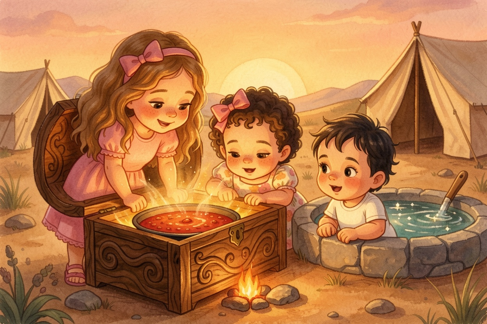
A Parasha Book · Parashat Toldot
תּוֹלְדֹת
Twins, Wells and a Blessing
starring Aviya, Tzofia & Lielle
Meet the explorers

Aviya, Tzofia & Lielle are about to climb into Parashat Toldot (Genesis 25:19–28:9).
Everything on these pages comes straight from the pesukim — the plain meaning, the peshat.
Each picture page is followed by the words of the Torah it comes from, in Hebrew and English, and a question to look for in the text.
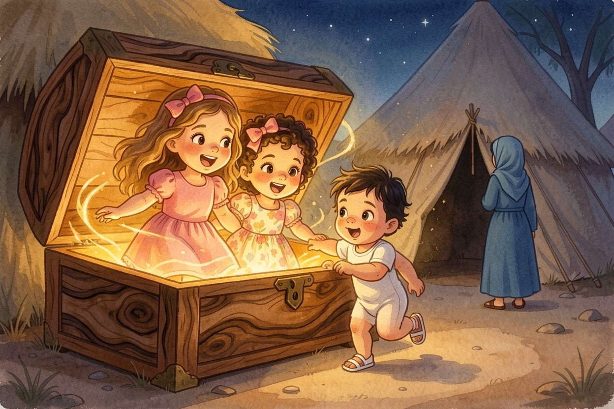
1Two Nations Inside
Bereshit 25:19-23Two Nations Inside
The Parsha Box was rattling on the Shabbat table, as if something inside was pushing. Aviya lifted the lid, the box grew, the sisters climbed in — and whoosh! It set down beside a big tent. Aviya read: Yitzchak was forty years old when he married Rivka. Rivka had no children, so Yitzchak prayed to Hashem for his wife — and Hashem answered him. But the babies pushed and pushed inside her! Rivka went to ask Hashem, and Hashem told her: "Two nations are inside you. One will be stronger than the other, and the older will serve the younger." Tzofia gasped. "Twins!"
Look closely: What did Hashem tell Rivka was inside her?
Two nations — "the older will serve the younger" (25:23).
From the Torah · Bereshit 25:19-23
19 וְאֵלֶּה תּוֹלְדֹת יִצְחָק בֶּן־אַבְרָהָם אַבְרָהָם הוֹלִיד אֶת־יִצְחָק׃
25:19 And these are the generations of Yiżĥaq, Avraham’s son: Avraham begot Yiżĥaq:
20 וַיְהִי יִצְחָק בֶּן־אַרְבָּעִים שָׁנָה בְּקַחְתּוֹ אֶת־רִבְקָה בַּת־בְּתוּאֵל הָאֲרַמִּי מִפַּדַּן אֲרָם אֲחוֹת לָבָן הָאֲרַמִּי לוֹ לְאִשָּׁה׃
25:20 and Yiżĥaq was forty years old when he took Rivqa to wife, the daughter of Betu᾽el the Arammian of Paddan-aram, the sister to Lavan the Arammian.
21 וַיֶּעְתַּר יִצְחָק לַיהוָה לְנֹכַח אִשְׁתּוֹ כִּי עֲקָרָה הִוא וַיֵּעָתֶר לוֹ יְהוָה וַתַּהַר רִבְקָה אִשְׁתּוֹ׃
25:21 And Yiżĥaq entreated the Lord for his wife, because she was barren: and the Lord was entreated of him, and Rivqa his wife conceived.
22 וַיִּתְרֹצֲצוּ הַבָּנִים בְּקִרְבָּהּ וַתֹּאמֶר אִם־כֵּן לָמָּה זֶּה אָנֹכִי וַתֵּלֶךְ לִדְרֹשׁ אֶת־יְהוָה׃
25:22 And the children struggled together within her; and she said, If it be so, why am I thus? And she went to inquire of the Lord.
23 וַיֹּאמֶר יְהוָה לָהּ שְׁנֵי גיים [גוֹיִם] בְּבִטְנֵךְ וּשְׁנֵי לְאֻמִּים מִמֵּעַיִךְ יִפָּרֵדוּ וּלְאֹם מִלְאֹם יֶאֱמָץ וְרַב יַעֲבֹד צָעִיר׃
25:23 And the Lord said to her, Two nations are in thy womb, and two peoples shall be separated from thy bowels; and the one people shall be stronger than the other people; and the elder shall serve the younger.
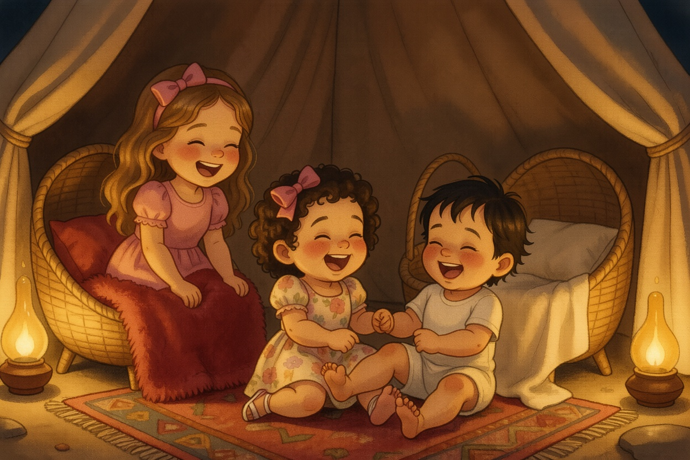
2Red and Hairy, Holding On
Bereshit 25:24-26Red and Hairy, Holding On
When it was time — there were twins! The first one came out red, all over like a hairy cloak, and they named him Esav. Then his brother came out, and his hand was holding on to Esav's heel, so they named him Yaakov. Tzofia grabbed Aviya's heel to show how. Lielle grabbed Tzofia's. Everyone tumbled over laughing. Aviya read: Yitzchak was sixty years old when they were born. "He waited twenty years," she said.
Look closely: Why was Yaakov named Yaakov?
Because his hand was holding on to Esav's heel — akev (25:26).
From the Torah · Bereshit 25:24-26
24 וַיִּמְלְאוּ יָמֶיהָ לָלֶדֶת וְהִנֵּה תוֹמִם בְּבִטְנָהּ׃
25:24 And when her days to be delivered were fulfilled, behold, there were twins in her womb.
25 וַיֵּצֵא הָרִאשׁוֹן אַדְמוֹנִי כֻּלּוֹ כְּאַדֶּרֶת שֵׂעָר וַיִּקְרְאוּ שְׁמוֹ עֵשָׂו׃
25:25 And the first came out red, all over like a hairy garment; and they called his name ῾Esav.
26 וְאַחֲרֵי־כֵן יָצָא אָחִיו וְיָדוֹ אֹחֶזֶת בַּעֲקֵב עֵשָׂו וַיִּקְרָא שְׁמוֹ יַעֲקֹב וְיִצְחָק בֶּן־שִׁשִּׁים שָׁנָה בְּלֶדֶת אֹתָם׃
25:26 And after that came out his brother, and his hand took hold on ῾Esav’s heel; and his name was called Ya῾aqov: and Yiżĥaq was sixty years old when she bore them.
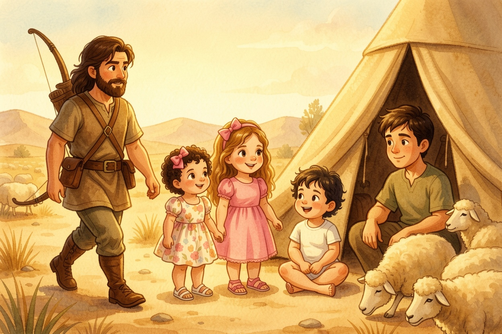
3The Hunter and the Tent
Bereshit 25:27-28The Hunter and the Tent
The boys grew up. Esav became a skilled hunter, a man of the field. Yaakov was a wholesome man who stayed in the tents. Yitzchak loved Esav, because Esav brought him meat from his hunting. And Rivka loved Yaakov. Tzofia looked from one brother to the other. "They're so different," she said. "Twins can be different," said Aviya. "Like you and me — and we're not even twins."
Look closely: How does the Torah describe Yaakov?
A wholesome man (ish tam) who dwelled in tents (25:27).
From the Torah · Bereshit 25:27-28
27 וַיִּגְדְּלוּ הַנְּעָרִים וַיְהִי עֵשָׂו אִישׁ יֹדֵעַ צַיִד אִישׁ שָׂדֶה וְיַעֲקֹב אִישׁ תָּם יֹשֵׁב אֹהָלִים׃
25:27 And the boys grew: and ῾Esav was a cunning hunter, a man of the field; and Ya῾aqov was a plain man, dwelling in tents.
28 וַיֶּאֱהַב יִצְחָק אֶת־עֵשָׂו כִּי־צַיִד בְּפִיו וְרִבְקָה אֹהֶבֶת אֶת־יַעֲקֹב׃
25:28 And Yiżĥaq loved ῾Esav, for he relished his venison: but Rivqa loved Ya῾aqov.
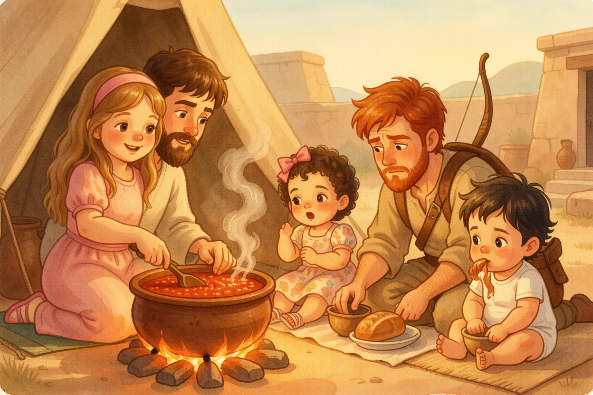
4Red, Red Stew
Bereshit 25:29-34Red, Red Stew
One day Yaakov was cooking a stew, and Esav came in from the field, exhausted. "Pour me some of that red, red stuff — I'm exhausted!" That is why he was called Edom. Yaakov said, "First sell me your birthright." "I'm about to die," said Esav. "What good is a birthright to me?" So Esav swore and sold it. Yaakov gave him bread and lentil stew, and he ate and drank and got up and left. Aviya read the last words slowly: "And Esav despised the birthright." Tzofia shook her head. "I would never trade something special for soup."
Look closely: What did Esav sell to Yaakov for the stew?
His birthright (25:33).
From the Torah · Bereshit 25:29-34
29 וַיָּזֶד יַעֲקֹב נָזִיד וַיָּבֹא עֵשָׂו מִן־הַשָּׂדֶה וְהוּא עָיֵף׃
25:29 And Ya῾aqov cooked pottage: and ῾Esav came from the field, and he was faint:
30 וַיֹּאמֶר עֵשָׂו אֶל־יַעֲקֹב הַלְעִיטֵנִי נָא מִן־הָאָדֹם הָאָדֹם הַזֶּה כִּי עָיֵף אָנֹכִי עַל־כֵּן קָרָא־שְׁמוֹ אֱדוֹם׃
25:30 and ῾Esav said to Ya῾aqov, Give me to swallow, I pray thee, of that red pottage; for I am faint: therefore was his name called Edom (red).
31 וַיֹּאמֶר יַעֲקֹב מִכְרָה כַיּוֹם אֶת־בְּכֹרָתְךָ לִי׃
25:31 And Ya῾aqov said, Sell me this day thy birthright.
32 וַיֹּאמֶר עֵשָׂו הִנֵּה אָנֹכִי הוֹלֵךְ לָמוּת וְלָמָּה־זֶּה לִי בְּכֹרָה׃
25:32 And ῾Esav said, Behold, I am at the point of death, and what profit shall this birthright do to me?
33 וַיֹּאמֶר יַעֲקֹב הִשָּׁבְעָה לִּי כַּיּוֹם וַיִּשָּׁבַע לוֹ וַיִּמְכֹּר אֶת־בְּכֹרָתוֹ לְיַעֲקֹב׃
25:33 And Ya῾aqov said, Swear to me this day; and he swore to him: and he sold his birthright to Ya῾aqov.
34 וְיַעֲקֹב נָתַן לְעֵשָׂו לֶחֶם וּנְזִיד עֲדָשִׁים וַיֹּאכַל וַיֵּשְׁתְּ וַיָּקָם וַיֵּלַךְ וַיִּבֶז עֵשָׂו אֶת־הַבְּכֹרָה׃
25:34 Then Ya῾aqov gave ῾Esav bread and pottage of lentils; and he did eat and drink, and rose up, and went his way: thus ῾Esav despised the birthright.
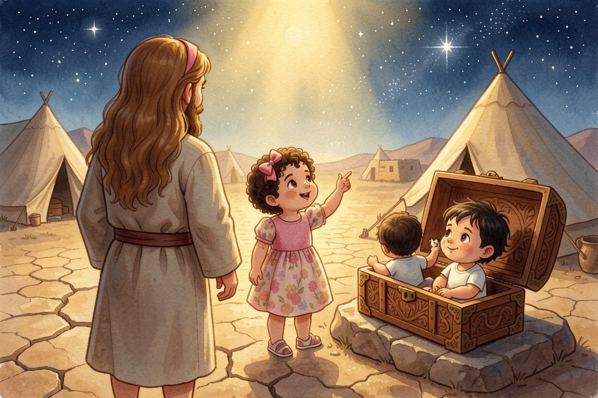
5Stay in the Land
Bereshit 26:1-5Stay in the Land
There was a famine in the land, like in Avraham's days. Yitzchak went to Avimelech, king of the Plishtim, in Gerar. Hashem appeared to him and said: "Don't go down to Egypt. Live in this land, and I will be with you and bless you. I will make your offspring as many as the stars of the sky, and give them all these lands — because Avraham listened to My voice." Tzofia looked up. "Stars again!" she said. "Same promise," said Aviya. "Now it's Yitzchak's turn."
Look closely: Where did Hashem tell Yitzchak not to go?
Down to Egypt (26:2).
From the Torah · Bereshit 26:1-5
1 וַיְהִי רָעָב בָּאָרֶץ מִלְּבַד הָרָעָב הָרִאשׁוֹן אֲשֶׁר הָיָה בִּימֵי אַבְרָהָם וַיֵּלֶךְ יִצְחָק אֶל־אֲבִימֶּלֶךְ מֶלֶךְ־פְּלִשְׁתִּים גְּרָרָה׃
26:1 And there was a famine in the land, beside the first famine that was in the days of Avraham. And Yiżĥaq went to Avimelekh, king of the Pelishtim to Gerar.
2 וַיֵּרָא אֵלָיו יְהוָה וַיֹּאמֶר אַל־תֵּרֵד מִצְרָיְמָה שְׁכֹן בָּאָרֶץ אֲשֶׁר אֹמַר אֵלֶיךָ׃
26:2 And the Lord appeared to him, and said, Go not down into Miżrayim; dwell in the land which I shall tell thee of:
3 גּוּר בָּאָרֶץ הַזֹּאת וְאֶהְיֶה עִמְּךָ וַאֲבָרְכֶךָּ כִּי־לְךָ וּלְזַרְעֲךָ אֶתֵּן אֶת־כָּל־הָאֲרָצֹת הָאֵל וַהֲקִמֹתִי אֶת־הַשְּׁבֻעָה אֲשֶׁר נִשְׁבַּעְתִּי לְאַבְרָהָם אָבִיךָ׃
26:3 sojourn in this land, and I will be with thee, and will bless thee; for to thee, and to thy seed, I will give all these countries and I will perform the oath which I swore to Avraham thy father;
4 וְהִרְבֵּיתִי אֶת־זַרְעֲךָ כְּכוֹכְבֵי הַשָּׁמַיִם וְנָתַתִּי לְזַרְעֲךָ אֵת כָּל־הָאֲרָצֹת הָאֵל וְהִתְבָּרֲכוּ בְזַרְעֲךָ כֹּל גּוֹיֵי הָאָרֶץ׃
26:4 and I will multiply thy seed as the stars of heaven, and will give to thy seed all these countries; and in thy seed shall all the nations of the earth be blessed;
5 עֵקֶב אֲשֶׁר־שָׁמַע אַבְרָהָם בְּקֹלִי וַיִּשְׁמֹר מִשְׁמַרְתִּי מִצְוֺתַי חֻקּוֹתַי וְתוֹרֹתָי׃
26:5 because Avraham obeyed My voice, and kept My charge, My commandments, My statutes, and My laws.
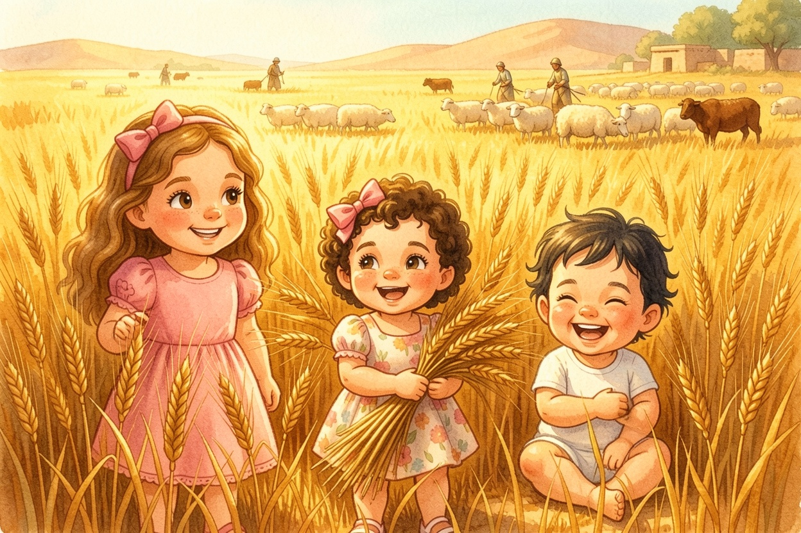
6A Hundred Times as Much
Bereshit 26:12-14A Hundred Times as Much
Yitzchak planted seeds in that land, and that year he harvested a hundred times as much — because Hashem blessed him. The man grew great, and greater and greater, until he was very great. He had flocks of sheep and herds of cattle and many servants. Tzofia hid in the tall golden wheat. Lielle hugged a whole sheaf. And the Plishtim were jealous of him.
Look closely: How much did Yitzchak harvest that year?
A hundred times what he planted (26:12).
From the Torah · Bereshit 26:12-14
12 וַיִּזְרַע יִצְחָק בָּאָרֶץ הַהִוא וַיִּמְצָא בַּשָּׁנָה הַהִוא מֵאָה שְׁעָרִים וַיְבָרֲכֵהוּ יְהוָה׃
26:12 Then Yiżĥaq sowed in that land, and received in the same year a hundredfold: for the Lord blessed him.
13 וַיִּגְדַּל הָאִישׁ וַיֵּלֶךְ הָלוֹךְ וְגָדֵל עַד כִּי־גָדַל מְאֹד׃
26:13 And the man grew great, and went forward, and grew until he became very great:
14 וַיְהִי־לוֹ מִקְנֵה־צֹאן וּמִקְנֵה בָקָר וַעֲבֻדָּה רַבָּה וַיְקַנְאוּ אֹתוֹ פְּלִשְׁתִּים׃
26:14 for he had possessions of flocks, and possessions of herds, and a great store of servants: and the Pelishtim envied him.
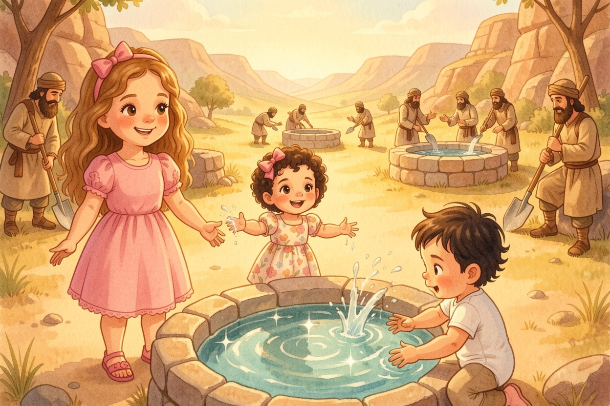
7Esek, Sitnah, Rechovot
Bereshit 26:18-22Esek, Sitnah, Rechovot
Yitzchak dug again the wells his father Avraham had dug, which the Plishtim had stopped up — and he gave them the same names his father had. Then his servants dug in the valley and found a well of fresh, flowing water. But the shepherds of Gerar argued: "The water is ours!" So he named it Esek — Argument. They dug another well, and they fought over that one too, so he named it Sitnah. He moved on and dug another well — and nobody fought over it. He named it Rechovot: "Now Hashem has made room for us." Tzofia spread her arms wide. "Room for everyone!"
Look closely: Why did Yitzchak name the third well Rechovot?
"For now Hashem has made room for us" (26:22).
From the Torah · Bereshit 26:18-22
18 וַיָּשָׁב יִצְחָק וַיַּחְפֹּר אֶת־בְּאֵרֹת הַמַּיִם אֲשֶׁר חָפְרוּ בִּימֵי אַבְרָהָם אָבִיו וַיְסַתְּמוּם פְּלִשְׁתִּים אַחֲרֵי מוֹת אַבְרָהָם וַיִּקְרָא לָהֶן שֵׁמוֹת כַּשֵּׁמֹת אֲשֶׁר־קָרָא לָהֶן אָבִיו׃
26:18 And Yiżĥaq dug again the wells of water, which they had dug in the days of Avraham his father; for the Pelishtim had stopped them up after the death of Avraham: and he called their names after the names by which his father had called them.
19 וַיַּחְפְּרוּ עַבְדֵי־יִצְחָק בַּנָּחַל וַיִּמְצְאוּ־שָׁם בְּאֵר מַיִם חַיִּים׃
26:19 And Yiżĥaq’s servants dug in the valley, and found there a well of springing water.
20 וַיָּרִיבוּ רֹעֵי גְרָר עִם־רֹעֵי יִצְחָק לֵאמֹר לָנוּ הַמָּיִם וַיִּקְרָא שֵׁם־הַבְּאֵר עֵשֶׂק כִּי הִתְעַשְּׂקוּ עִמּוֹ׃
26:20 And the herdmen of Gerar did strive with Yiżĥaq’s herdmen, saying, The water is ours: and he called the name of the well ῾Eseq; because they strove with him.
21 וַיַּחְפְּרוּ בְּאֵר אַחֶרֶת וַיָּרִיבוּ גַּם־עָלֶיהָ וַיִּקְרָא שְׁמָהּ שִׂטְנָה׃
26:21 And they dug another well, and strove for that also: and he called the name of it Sitna.
22 וַיַּעְתֵּק מִשָּׁם וַיַּחְפֹּר בְּאֵר אַחֶרֶת וְלֹא רָבוּ עָלֶיהָ וַיִּקְרָא שְׁמָהּ רְחֹבוֹת וַיֹּאמֶר כִּי־עַתָּה הִרְחִיב יְהוָה לָנוּ וּפָרִינוּ בָאָרֶץ׃
26:22 And he removed from there, and dug another well; and for that they strove not: and he called the name of it Reĥovot; and he said, For now the Lord has made room for us, and we shall be fruitful in the land.
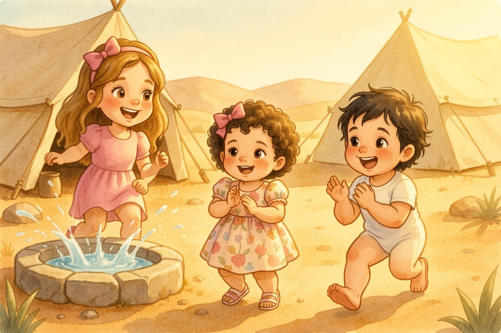
8We Found Water!
Bereshit 26:23-25; Bereshit 26:32-33We Found Water!
Yitzchak went up to Be'er Sheva. That night Hashem appeared to him: "I am the God of Avraham your father. Don't be afraid, for I am with you." So Yitzchak built an altar there and called out in the name of Hashem, and he pitched his tent, and his servants dug a well. That very day the servants came running: "We found water!" He named it Shiv'ah. Aviya read: that's why the city is called Be'er Sheva to this day. Tzofia gasped. "Be'er Sheva — we were there last time, with Avraham!"
Look closely: What did Yitzchak build in Be'er Sheva?
An altar — and he pitched his tent there and his servants dug a well (26:25).
From the Torah · Bereshit 26:23-25; Bereshit 26:32-33
23 וַיַּעַל מִשָּׁם בְּאֵר שָׁבַע׃
26:23 And he went up from there to Be᾽er-sheva.
24 וַיֵּרָא אֵלָיו יְהוָה בַּלַּיְלָה הַהוּא וַיֹּאמֶר אָנֹכִי אֱלֹהֵי אַבְרָהָם אָבִיךָ אַל־תִּירָא כִּי־אִתְּךָ אָנֹכִי וּבֵרַכְתִּיךָ וְהִרְבֵּיתִי אֶת־זַרְעֲךָ בַּעֲבוּר אַבְרָהָם עַבְדִּי׃
26:24 And the Lord appeared to him the same night, and said, I am the God of Avraham thy father: fear not, for I am with thee, and will bless thee, and multiply thy seed for My servant Avraham’s sake.
25 וַיִּבֶן שָׁם מִזְבֵּחַ וַיִּקְרָא בְּשֵׁם יְהוָה וַיֶּט־שָׁם אָהֳלוֹ וַיִּכְרוּ־שָׁם עַבְדֵי־יִצְחָק בְּאֵר׃
26:25 And he built an altar there, and called upon the name of the Lord, and pitched his tent there: and there Yiżĥaq’s servants dug a well.
32 וַיְהִי בַּיּוֹם הַהוּא וַיָּבֹאוּ עַבְדֵי יִצְחָק וַיַּגִּדוּ לוֹ עַל־אֹדוֹת הַבְּאֵר אֲשֶׁר חָפָרוּ וַיֹּאמְרוּ לוֹ מָצָאנוּ מָיִם׃
26:32 And it came to pass the same day, that Yiżĥaq’s servants came, and told him concerning the well which they had dug, and said to him, We have found water.
33 וַיִּקְרָא אֹתָהּ שִׁבְעָה עַל־כֵּן שֵׁם־הָעִיר בְּאֵר שֶׁבַע עַד הַיּוֹם הַזֶּה׃
26:33 And he called it Shiv῾a: therefore the name of the city is Be᾽er-sheva to this day.
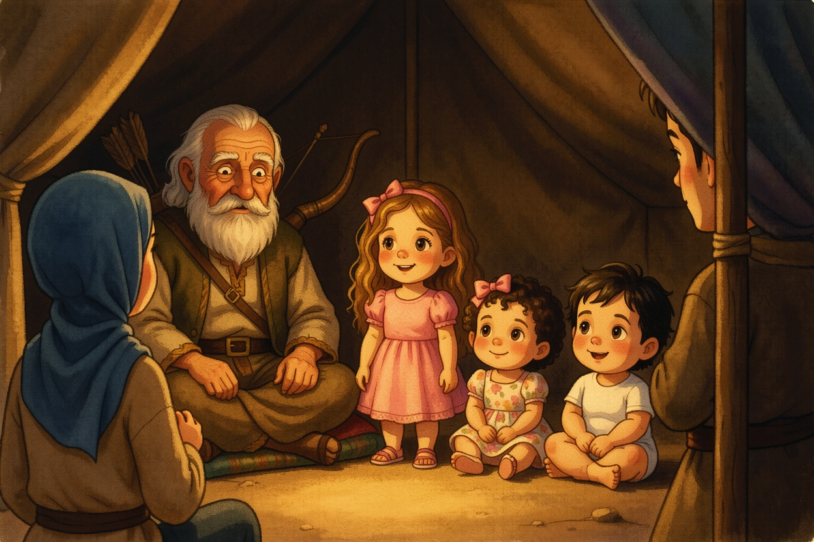
9Go Out and Hunt
Bereshit 27:1-4Go Out and Hunt
Yitzchak grew old, and his eyes grew too dim to see. He called Esav, his older son: "My son!" "Here I am." "I am old now. Take your bow and your arrows, go out to the field and hunt for me. Make me the tasty food I love and bring it to me, so I can eat and bless you." Esav went out to the field. Tzofia whispered, "He's going to get the blessing." Aviya looked over at the other side of the tent. "Someone else was listening," she said.
Look closely: What did Yitzchak ask Esav to bring him?
Game from the field, made into the tasty food he loved (27:3-4).
From the Torah · Bereshit 27:1-4
1 וַיְהִי כִּי־זָקֵן יִצְחָק וַתִּכְהֶיןָ עֵינָיו מֵרְאֹת וַיִּקְרָא אֶת־עֵשָׂו בְּנוֹ הַגָּדֹל וַיֹּאמֶר אֵלָיו בְּנִי וַיֹּאמֶר אֵלָיו הִנֵּנִי׃
27:1 And it came to pass, that when Yiżĥaq was old, and his eyes were dim, so that he could not see, he called ῾Esav his eldest son, and said to him, My son: and he said to him, Here I am.
2 וַיֹּאמֶר הִנֵּה־נָא זָקַנְתִּי לֹא יָדַעְתִּי יוֹם מוֹתִי׃
27:2 And he said, Behold now, I am old, I know not the day of my death:
3 וְעַתָּה שָׂא־נָא כֵלֶיךָ תֶּלְיְךָ וְקַשְׁתֶּךָ וְצֵא הַשָּׂדֶה וְצוּדָה לִּי צידה [צָיִד׃]
27:3 now therefore take, I pray thee, thy weapons, thy quiver and thy bow, and go out to the field, and catch me some venison;
4 וַעֲשֵׂה־לִי מַטְעַמִּים כַּאֲשֶׁר אָהַבְתִּי וְהָבִיאָה לִּי וְאֹכֵלָה בַּעֲבוּר תְּבָרֶכְךָ נַפְשִׁי בְּטֶרֶם אָמוּת׃
27:4 and make me savoury food, such as I love, and bring it to me, that I may eat, that my soul may bless thee before I die.
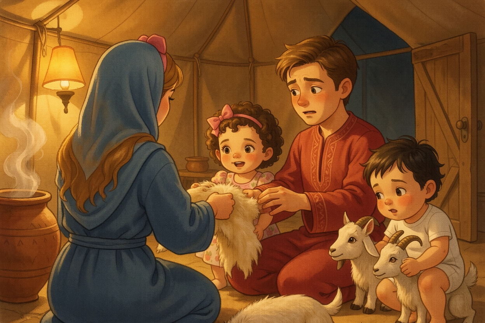
10Goatskin Gloves
Bereshit 27:5-17Goatskin Gloves
Rivka heard everything. She said to Yaakov: "Listen to me, my son. Go to the flock and bring me two good young goats, and I'll make them into the tasty food your father loves. You will bring it to him." Yaakov said: "But Esav my brother is a hairy man, and I am a smooth man! What if my father touches me?" Rivka said, "Just listen to my voice." She dressed Yaakov in Esav's best clothes, and she put the goat skins on his hands and on the smooth part of his neck. Tzofia patted her own arm. "Smooth," she said. Lielle patted a goat.
Look closely: Why was Yaakov worried about his father touching him?
Because Esav was a hairy man and Yaakov was smooth (27:11).
From the Torah · Bereshit 27:5-17
5 וְרִבְקָה שֹׁמַעַת בְּדַבֵּר יִצְחָק אֶל־עֵשָׂו בְּנוֹ וַיֵּלֶךְ עֵשָׂו הַשָּׂדֶה לָצוּד צַיִד לְהָבִיא׃
27:5 And Rivqa heard when Yiżĥaq spoke to ῾Esav his son. And ῾Esav went to the field to hunt for venison, and to bring it.
6 וְרִבְקָה אָמְרָה אֶל־יַעֲקֹב בְּנָהּ לֵאמֹר הִנֵּה שָׁמַעְתִּי אֶת־אָבִיךָ מְדַבֵּר אֶל־עֵשָׂו אָחִיךָ לֵאמֹר׃
27:6 And Rivqa spoke to Ya῾aqov her son, saying, Behold, I heard thy father speak to ῾Esav thy brother, saying,
7 הָבִיאָה לִּי צַיִד וַעֲשֵׂה־לִי מַטְעַמִּים וְאֹכֵלָה וַאֲבָרֶכְכָה לִפְנֵי יְהוָה לִפְנֵי מוֹתִי׃
27:7 Bring me venison, and make me savoury food, that I may eat, and bless thee before the Lord before my death.
8 וְעַתָּה בְנִי שְׁמַע בְּקֹלִי לַאֲשֶׁר אֲנִי מְצַוָּה אֹתָךְ׃
27:8 Now therefore, my son, obey my voice according to that which I command thee.
9 לֶךְ־נָא אֶל־הַצֹּאן וְקַח־לִי מִשָּׁם שְׁנֵי גְּדָיֵי עִזִּים טֹבִים וְאֶעֱשֶׂה אֹתָם מַטְעַמִּים לְאָבִיךָ כַּאֲשֶׁר אָהֵב׃
27:9 Go now to the flock, and fetch me from there two good kids of the goats; and I will make them into savoury food for thy father, such as he loves:
10 וְהֵבֵאתָ לְאָבִיךָ וְאָכָל בַּעֲבֻר אֲשֶׁר יְבָרֶכְךָ לִפְנֵי מוֹתוֹ׃
27:10 and thou shalt bring it to thy father, that he may eat, and that he may bless thee before his death.
11 וַיֹּאמֶר יַעֲקֹב אֶל־רִבְקָה אִמּוֹ הֵן עֵשָׂו אָחִי אִישׁ שָׂעִר וְאָנֹכִי אִישׁ חָלָק׃
27:11 And Ya῾aqov said to Rivqa his mother, Behold, ῾Esav my brother is a hairy man, and I am a smooth man:
12 אוּלַי יְמֻשֵּׁנִי אָבִי וְהָיִיתִי בְעֵינָיו כִּמְתַעְתֵּעַ וְהֵבֵאתִי עָלַי קְלָלָה וְלֹא בְרָכָה׃
27:12 my father perhaps will feel me, and I shall seem to him a deceiver; and I shall bring a curse upon me, and not a blessing.
13 וַתֹּאמֶר לוֹ אִמּוֹ עָלַי קִלְלָתְךָ בְּנִי אַךְ שְׁמַע בְּקֹלִי וְלֵךְ קַח־לִי׃
27:13 And his mother said to him, Upon me be thy curse, my son: only obey my voice, and go fetch me them.
14 וַיֵּלֶךְ וַיִּקַּח וַיָּבֵא לְאִמּוֹ וַתַּעַשׂ אִמּוֹ מַטְעַמִּים כַּאֲשֶׁר אָהֵב אָבִיו׃
27:14 And he went, and fetched, and brought them to his mother: and his mother made savoury food, such as his father loved.
15 וַתִּקַּח רִבְקָה אֶת־בִּגְדֵי עֵשָׂו בְּנָהּ הַגָּדֹל הַחֲמֻדֹת אֲשֶׁר אִתָּהּ בַּבָּיִת וַתַּלְבֵּשׁ אֶת־יַעֲקֹב בְּנָהּ הַקָּטָן׃
27:15 And Rivqa took the best clothes of her eldest son ῾Esav, which were with her in the house, and put them upon Ya῾aqov her younger son:
16 וְאֵת עֹרֹת גְּדָיֵי הָעִזִּים הִלְבִּישָׁה עַל־יָדָיו וְעַל חֶלְקַת צַוָּארָיו׃
27:16 and she put the skins of the kids of the goats upon his hands, and upon the smooth of his neck:
17 וַתִּתֵּן אֶת־הַמַּטְעַמִּים וְאֶת־הַלֶּחֶם אֲשֶׁר עָשָׂתָה בְּיַד יַעֲקֹב בְּנָהּ׃
27:17 and she gave the savoury food and the bread, which she had prepared, into the hand of her son Ya῾aqov.
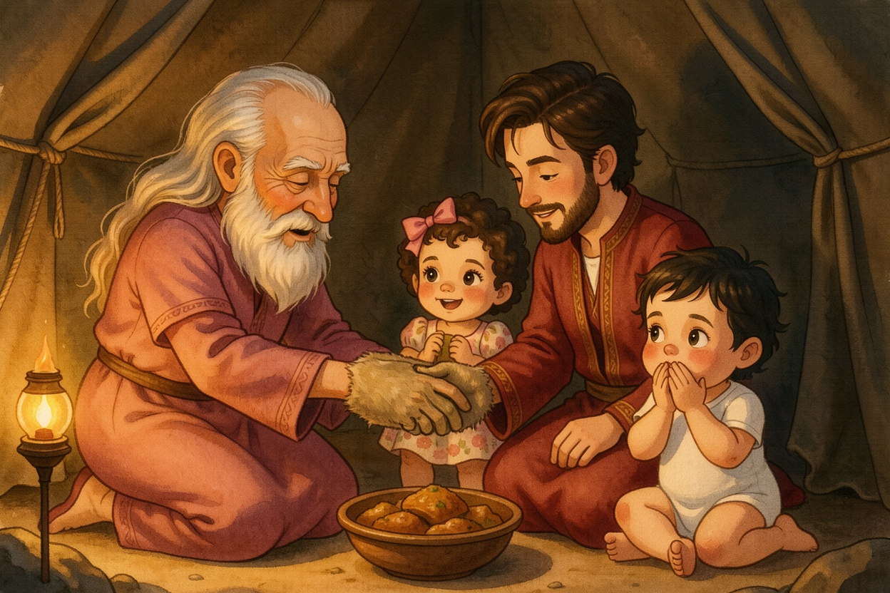
11The Voice and the Hands
Bereshit 27:18-29The Voice and the Hands
Yaakov came to his father: "My father." "Here I am. Who are you, my son?" "I am Esav, your firstborn." "Come close so I can feel you," said Yitzchak. Yitzchak felt him and said: "The voice is the voice of Yaakov — but the hands are the hands of Esav." He did not recognize him, and he blessed him: "May God give you of the dew of the sky and the richness of the earth, and plenty of grain and wine." Tzofia put her hands over her mouth. "He knew the voice," whispered Aviya. "But he trusted the hands."
Look closely: What did Yitzchak say about the voice and the hands?
"The voice is the voice of Yaakov, but the hands are the hands of Esav" (27:22).
From the Torah · Bereshit 27:18-29
18 וַיָּבֹא אֶל־אָבִיו וַיֹּאמֶר אָבִי וַיֹּאמֶר הִנֶּנִּי מִי אַתָּה בְּנִי׃
27:18 And he came to his father, and said, My father: and he said, Here am I: who art thou, my son?
19 וַיֹּאמֶר יַעֲקֹב אֶל־אָבִיו אָנֹכִי עֵשָׂו בְּכֹרֶךָ עָשִׂיתִי כַּאֲשֶׁר דִּבַּרְתָּ אֵלָי קוּם־נָא שְׁבָה וְאָכְלָה מִצֵּידִי בַּעֲבוּר תְּבָרֲכַנִּי נַפְשֶׁךָ׃
27:19 And Ya῾aqov said to his father, I am ῾Esav thy firstborn; I have done according as thou didst tell me: arise, I pray thee, sit and eat of my venison, that thy soul may bless me.
20 וַיֹּאמֶר יִצְחָק אֶל־בְּנוֹ מַה־זֶּה מִהַרְתָּ לִמְצֹא בְּנִי וַיֹּאמֶר כִּי הִקְרָה יְהוָה אֱלֹהֶיךָ לְפָנָי׃
27:20 And Yiżĥaq said to his son, How is it that thou hast found it so quickly, my son? And he said, Because, the Lord thy God sent me good speed.
21 וַיֹּאמֶר יִצְחָק אֶל־יַעֲקֹב גְּשָׁה־נָּא וַאֲמֻשְׁךָ בְּנִי הַאַתָּה זֶה בְּנִי עֵשָׂו אִם־לֹא׃
27:21 And Yiżĥaq said to Ya῾aqov, Come near, I pray thee, that I may feel thee, my son, whether thou art really my son ῾Esav or not.
22 וַיִּגַּשׁ יַעֲקֹב אֶל־יִצְחָק אָבִיו וַיְמֻשֵּׁהוּ וַיֹּאמֶר הַקֹּל קוֹל יַעֲקֹב וְהַיָּדַיִם יְדֵי עֵשָׂו׃
27:22 And Ya῾aqov went near to Yiżĥaq his father; and he felt him, and said, The voice is Ya῾aqov’s voice, but the hands are the hands of ῾Esav.
23 וְלֹא הִכִּירוֹ כִּי־הָיוּ יָדָיו כִּידֵי עֵשָׂו אָחִיו שְׂעִרֹת וַיְבָרְכֵהוּ׃
27:23 And he recognised him not, because his hands were hairy, as his brother ῾Esav’s hands: so he blessed him.
24 וַיֹּאמֶר אַתָּה זֶה בְּנִי עֵשָׂו וַיֹּאמֶר אָנִי׃
27:24 And he said, Art thou really my son ῾Esav? And he said, I am.
25 וַיֹּאמֶר הַגִּשָׁה לִּי וְאֹכְלָה מִצֵּיד בְּנִי לְמַעַן תְּבָרֶכְךָ נַפְשִׁי וַיַּגֶּשׁ־לוֹ וַיֹּאכַל וַיָּבֵא לוֹ יַיִן וַיֵּשְׁתְּ׃
27:25 And he said, Bring it near to me, and I will eat of my son’s venison, that my soul may bless thee. And he brought it near to him, and he did eat: and he brought him wine, and he drank.
26 וַיֹּאמֶר אֵלָיו יִצְחָק אָבִיו גְּשָׁה־נָּא וּשְׁקָה־לִּי בְּנִי׃
27:26 And his father Yiżĥaq said to him, Come near now, and kiss me, my son.
27 וַיִּגַּשׁ וַיִּשַּׁק־לוֹ וַיָּרַח אֶת־רֵיחַ בְּגָדָיו וַיְבָרֲכֵהוּ וַיֹּאמֶר רְאֵה רֵיחַ בְּנִי כְּרֵיחַ שָׂדֶה אֲשֶׁר בֵּרֲכוֹ יְהוָה׃
27:27 And he came near, and kissed him: and he smelt the smell of his garments, and blessed him, and said, See, the smell of my son is like the smell of a field which the Lord has blessed:
28 וְיִתֶּן־לְךָ הָאֱלֹהִים מִטַּל הַשָּׁמַיִם וּמִשְׁמַנֵּי הָאָרֶץ וְרֹב דָּגָן וְתִירֹשׁ׃
27:28 therefore God give thee of the dew of heaven, and the fatness of the earth, and plenty of corn and wine:
29 יַעַבְדוּךָ עַמִּים וישתחו [וְיִשְׁתַּחֲווּ] לְךָ לְאֻמִּים הֱוֵה גְבִיר לְאַחֶיךָ וְיִשְׁתַּחֲוּוּ לְךָ בְּנֵי אִמֶּךָ אֹרְרֶיךָ אָרוּר וּמְבָרֲכֶיךָ בָּרוּךְ׃
27:29 let peoples serve thee, and nations bow down to thee: be lord over thy brethren, and let thy mother’s sons bow down to thee: cursed be those that curse thee, and blessed be those that bless thee.
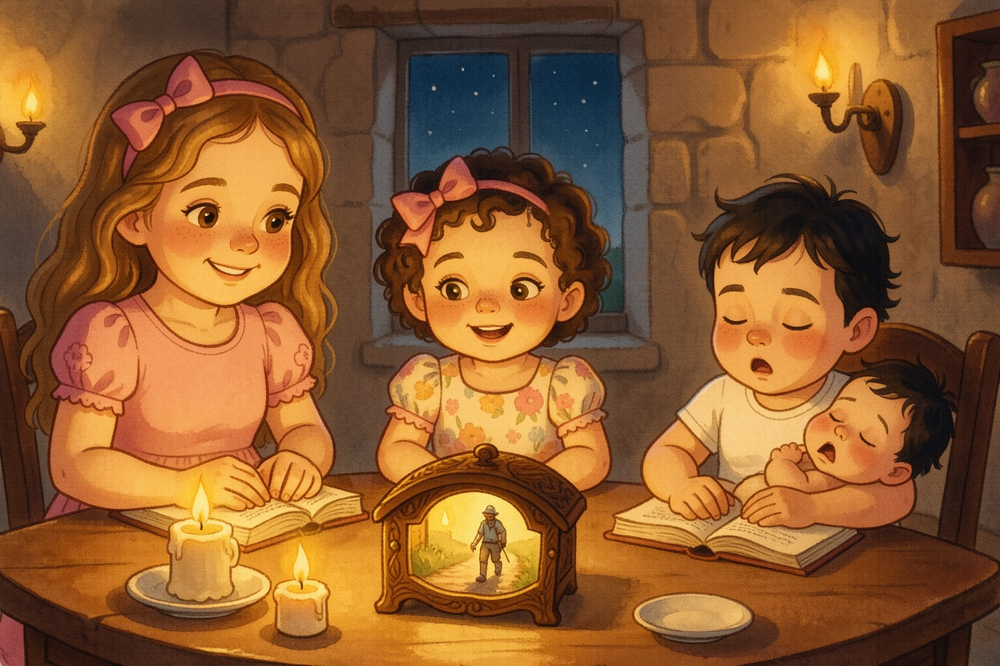
12Off to Charan
Bereshit 27:30-34; Bereshit 28:1-5Off to Charan
Yaakov had just gone out when Esav came in from hunting. "Who are you?" asked Yitzchak. "I am Esav!" Yitzchak trembled very much. And Esav cried a great and bitter cry: "Bless me too, my father!" Later, Yitzchak called Yaakov and blessed him, and told him: "Go to Paddan Aram, to the house of Betuel, your mother's father, and marry one of Lavan's daughters. May God give you the blessing of Avraham." The sisters climbed back into the Parsha Box, and whoosh — they were home at the Shabbat table, and the box was small again. "Next week," said Aviya, "Yaakov goes on a long trip — and has a dream."
Look closely: Where did Yitzchak send Yaakov?
To Paddan Aram, to the house of Betuel, to marry from the daughters of Lavan (28:2).
From the Torah · Bereshit 27:30-34; Bereshit 28:1-5
30 וַיְהִי כַּאֲשֶׁר כִּלָּה יִצְחָק לְבָרֵךְ אֶת־יַעֲקֹב וַיְהִי אַךְ יָצֹא יָצָא יַעֲקֹב מֵאֵת פְּנֵי יִצְחָק אָבִיו וְעֵשָׂו אָחִיו בָּא מִצֵּידוֹ׃
27:30 And it came to pass, as soon as Yiżĥaq had made an end of blessing Ya῾aqov, and Ya῾aqov was yet scarce gone out from the presence of Yiżĥaq his father, that ῾Esav his brother came in from his hunting.
31 וַיַּעַשׂ גַּם־הוּא מַטְעַמִּים וַיָּבֵא לְאָבִיו וַיֹּאמֶר לְאָבִיו יָקֻם אָבִי וְיֹאכַל מִצֵּיד בְּנוֹ בַּעֲבוּר תְּבָרֲכַנִּי נַפְשֶׁךָ׃
27:31 And he also had made savoury food, and brought it to his father, and said to his father, Let my father arise, and eat of his son’s venison, that thy soul may bless me.
32 וַיֹּאמֶר לוֹ יִצְחָק אָבִיו מִי־אָתָּה וַיֹּאמֶר אֲנִי בִּנְךָ בְכֹרְךָ עֵשָׂו׃
27:32 And Yiżĥaq his father said to him, Who art thou? And he said, I am thy son, thy firstborn ῾Esav.
33 וַיֶּחֱרַד יִצְחָק חֲרָדָה גְּדֹלָה עַד־מְאֹד וַיֹּאמֶר מִי־אֵפוֹא הוּא הַצָּד־צַיִד וַיָּבֵא לִי וָאֹכַל מִכֹּל בְּטֶרֶם תָּבוֹא וָאֲבָרֲכֵהוּ גַּם־בָּרוּךְ יִהְיֶה׃
27:33 And Yiżĥaq trembled very much, and said, Who then is he that has taken venison, and brought it me, and I have eaten of all before thou camest, and have blessed him? moreover, he shall be blessed.
34 כִּשְׁמֹעַ עֵשָׂו אֶת־דִּבְרֵי אָבִיו וַיִּצְעַק צְעָקָה גְּדֹלָה וּמָרָה עַד־מְאֹד וַיֹּאמֶר לְאָבִיו בָּרֲכֵנִי גַם־אָנִי אָבִי׃
27:34 And when ῾Esav heard the words of his father, he cried with a great and exceedingly bitter cry, and said to his father, Bless me, me also, O my father.
1 וַיִּקְרָא יִצְחָק אֶל־יַעֲקֹב וַיְבָרֶךְ אֹתוֹ וַיְצַוֵּהוּ וַיֹּאמֶר לוֹ לֹא־תִקַּח אִשָּׁה מִבְּנוֹת כְּנָעַן׃
28:1 And Yiżĥaq called Ya῾aqov, and blessed him, and charged him, and said to him, Thou shalt not take a wife of the daughters of Kena῾an.
2 קוּם לֵךְ פַּדֶּנָה אֲרָם בֵּיתָה בְתוּאֵל אֲבִי אִמֶּךָ וְקַח־לְךָ מִשָּׁם אִשָּׁה מִבְּנוֹת לָבָן אֲחִי אִמֶּךָ׃
28:2 Arise, go to Paddan-aram, to the house of Betu᾽el thy mother’s father; and take thee a wife from there of the daughters of Lavan thy mother’s brother.
3 וְאֵל שַׁדַּי יְבָרֵךְ אֹתְךָ וְיַפְרְךָ וְיַרְבֶּךָ וְהָיִיתָ לִקְהַל עַמִּים׃
28:3 And God Almighty bless thee, and make thee fruitful, and multiply thee, that thou mayst be a multitude of people;
4 וְיִתֶּן־לְךָ אֶת־בִּרְכַּת אַבְרָהָם לְךָ וּלְזַרְעֲךָ אִתָּךְ לְרִשְׁתְּךָ אֶת־אֶרֶץ מְגֻרֶיךָ אֲשֶׁר־נָתַן אֱלֹהִים לְאַבְרָהָם׃
28:4 and give thee the blessing of Avraham, to thee, and to thy seed with thee; that thou mayst inherit the land in which thou art a sojourner, and which God gave to Avraham.
5 וַיִּשְׁלַח יִצְחָק אֶת־יַעֲקֹב וַיֵּלֶךְ פַּדֶּנָה אֲרָם אֶל־לָבָן בֶּן־בְּתוּאֵל הָאֲרַמִּי אֲחִי רִבְקָה אֵם יַעֲקֹב וְעֵשָׂו׃
28:5 And Yiżĥaq sent away Ya῾aqov: and he went to Paddan-aram to Lavan, son of Betu᾽el the Arammian, the brother of Rivqa, mother of Ya῾aqov and ῾Esav.
The End
Three sisters ride the Parsha Box into Yitzchak and Rivka's tent — and meet Esav and Yaakov. Read it again this Shabbat — and see how much more you can find in the pesukim.
Pesukim from Sefaria (Tanach with Nikkud · The Koren Jerusalem Bible). Illustrations made with FLUX.2 [klein]. Peshat fidelity checked with Jev.